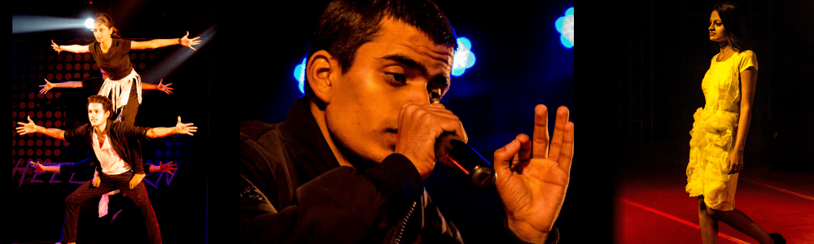
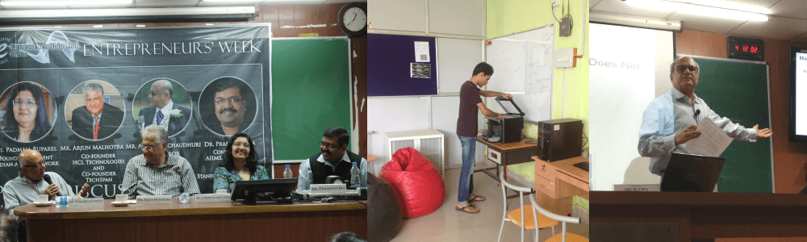
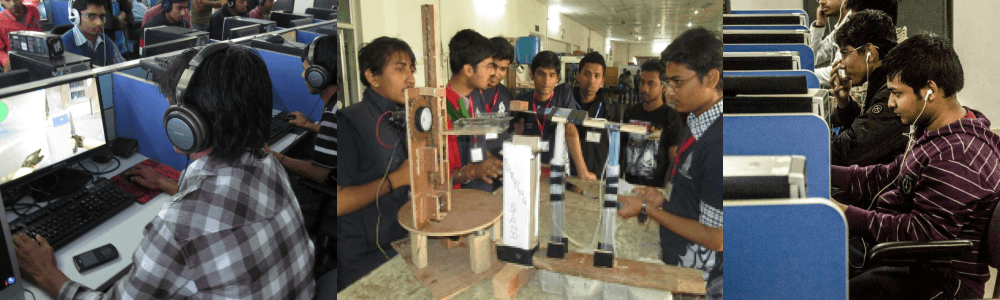
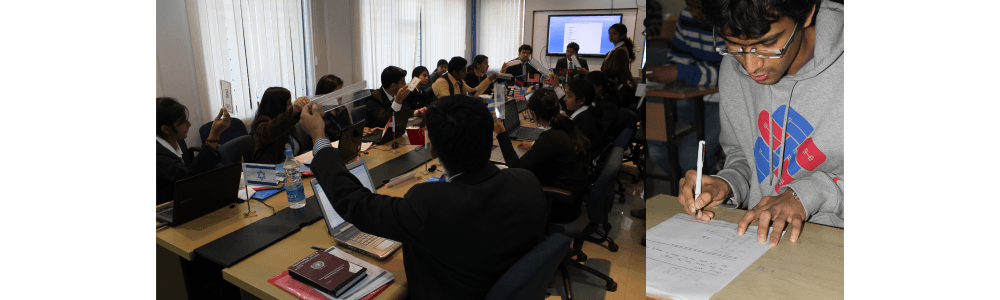
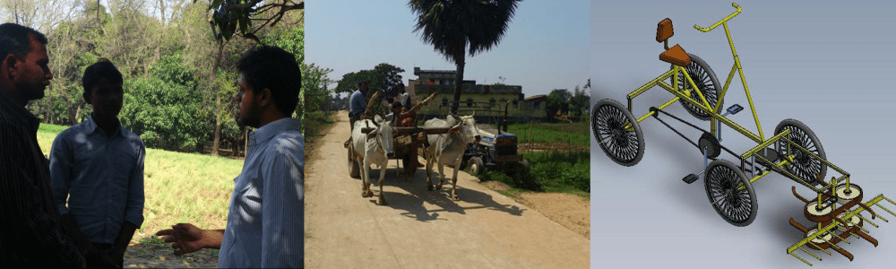

Clubs
Clubs @ IIT PATNA
Cultural Club

The Cultural club organizes and promotes all the extra-curricular activities. The club aims to promote major cultural festivals. This club organizes small events for easing out the academic pressure on students as well. Currently, this club is organizing modern dance, music and yoga classes. Fests like Reverberance, Anwesha, Nebula and many more intra college and inter college gaming competitions were organized successfully by this club.
For the latest news and updates about ‘Cultural club’, please visit the student-run portals listed below. The views/ opinions expressed at the links belong solely to the authors and may not necessarily represent the views of the Indian Institute of Technology Patna
Official website: www.iitp.ac.in/hosca
Facebook page: www.facebook.com/iitp.sociocultural/
YouTube Channel: www.youtube.com/user/CULTatIITP
Entrepreneurship Club

The Entrepreneurship Club at IIT Patna was setup with the vision to create a gelling point for aspiring entrepreneurs at the institute. The club’s mission is to educate the students about the nuances involved in business and entrepreneurship and to prepare them to undertake the journey from the genesis of an idea to its successful business implementation.
The Club regularly hosts guest lectures by distinguished personalities from the industry and academia, in addition to organising various business and marketing competitions round the year.
For the latest news and updates about ‘Entrepreneurship Club’, please visit the student-run portals listed below. The views/ opinions expressed at the links belong solely to the authors and may not necessarily represent the views of the Indian Institute of Technology Patna
Official website: www.entrepreneurshipclub.org
Facebook page: www.facebook.com/iitp.entrepreneurship
YouTube channel: www.youtube.com/user/iitpentrepreneurship
Departmental Clubs:

Each department at IIT Patna has its own student-run technical club. These clubs organise a multitude of competitions and special lectures all round the year and work to encourage and mentor innovative student-led projects. Their efforts culminate into ‘Celesta’, IIT Patna’s annual techno-management week organised during the autumn season every year.
The departmental clubs include
NJACK (Not Just Another Computer Science Club)
Sparkonics (The Electrical Engineering Club)
SCME (Students' Council of Mechanical Engineers)
SAE (Society of Automotive Engineers)
Literary Club

Indian Institutes of technology have always been the cradle that groomed many a brilliant author in the country, thanks to those who still cherish the spark despite the technological work load they confront day after day. The founding of literary club produced a platform conducive for nurturing such talents in today's students of technology. For all those who know that the "pen is mightier than the sword", this is very well their arena. Talents are to be shown, not to be hidden. Some of the most successful and crowd pulling events in the institute were organized under the literary club such as the treasure hunt, love letter writing, arbit speaking, and so forth. The literary club of IITP represented the college in "Rendezvous of Colleges", a parliamentary debate competition held in the Magadh Mahila College in Patna and bagged the first prize out of all participating twenty colleges.
For the latest news and updates about ‘Literary Club’, please visit the student-run portals listed below. The views/ opinions expressed at the links belong solely to the authors and may not necessarily represent the views of the Indian Institute of Technology Patna
Facebook page: www.facebook.com/holfa.iitp
Sports Club

Apart from academic and cultural activities, IIT Patna gives equal importance to sports as well. One can continue his/her passion in a game or sport even after a long breathless struggle to be in one of the best institutes in India. The sports club IIT Patna under the guidance of Asst.Coach Shyam Kumar, brings the most talented sportsmen to light by organizing inter-hostel and inter-department competitions from time to time. The ones who excel in the college level will be selected to inter IIT sports meet where they can experience the real time competitive environment in which each IITian will be striving his best to show the world that IITians are no less compared to the best sportsmen in the country. IIT Patna has a cricket ground, foot ball ground, volley ball court, tennis court, badminton court, Table tennis tables with in the campus where one can find students practicing round the clock.
Rural Technology Development Club:

The aim of the Rural Technology Development Club (RTDC) is to identify the
problems prevailing in the rural areas and to work to develop technologies and devices to address them. The Club strives to fill the technological void existing in the rural areas. Keeping this in mind, the team regularly surveys different villages to understand the problems faced by the rural populace.
Various projects currently being undertaken by the Club include
a manual wheat harvesting machine, a self running canal based irrigation
system and a solar-powered LED based reading light.
For the latest news and updates about ‘RTDC’, please visit the student-run portals listed below. The views/ opinions expressed at the links belong solely to the authors and may not necessarily represent the views of the Indian Institute of Technology Patna
Facebook page: www.facebook.com/ruraltechnologydevelopment
Eco Club
The environmental club of IIT Patna attempts to change our attitude towards the Earth.We do everything to spread awareness among people and sensitize them to global and local practices which are changing the world for the worse.And we do it innovatively too. By organizing seminars, awareness camps, debates, quiz shows, campus clean up initiatives, tree-plantation camps and so on.We have tie-ups with GREENPEACE and AARAMBH and they are going to take up collaborative projects with us.


{kind=link}
{kind=link}
{kind=link}
{kind=link}
{kind=link}
{kind=link}